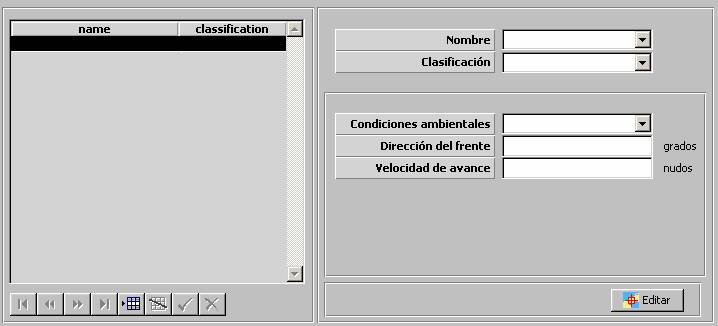

Zonas Ambientales

Mediante esta tabla se especifican todas las Zonas Ambientales incluidas en el Ejercicio. Todas las unidades que entren en cada una de estas zonas se verán afectadas por las condiciones Ambientales especificadas para dicha zona.
Para cada zona se especifican los siguientes parámetros:
Condiciones Ambientales: Ver apartado Condiciones Ambientales.
Los dos siguientes parámetros permiten definir frentes meteorológicos asignando un movimiento (dirección y velocidad) a las zonas meteorológicas:
Dirección del frente: Dirección en la que se mueve la zona meteorológica.
Velocidad de Avance: Velocidad con la que se mueve la zona meteorológica.
Editar: Mediante este botón se abre la ventana de Preparación de Escenarios, sobre la que se mostrará una Herramienta de Dibujo con la que se podrá especificar gráficamente la zona ambiental. Ver la descripción de esta herramienta en el apartado Preparación de Escenario.